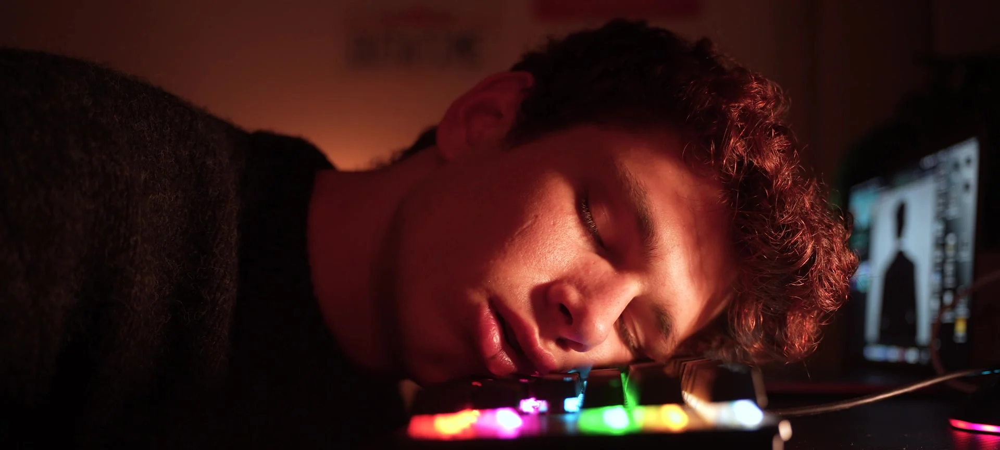
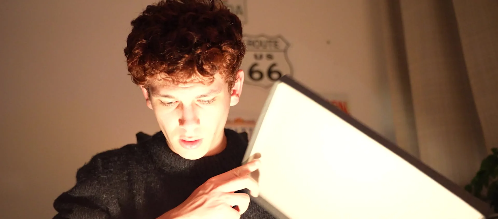
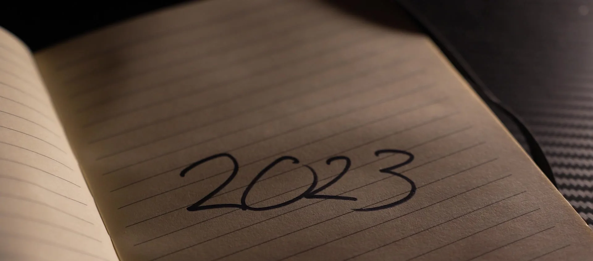
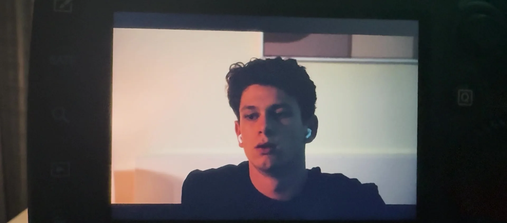
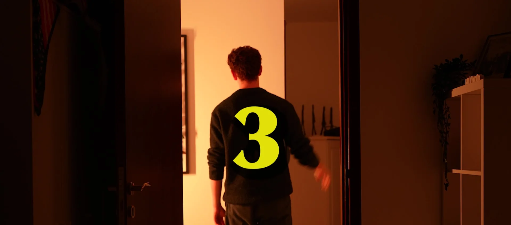
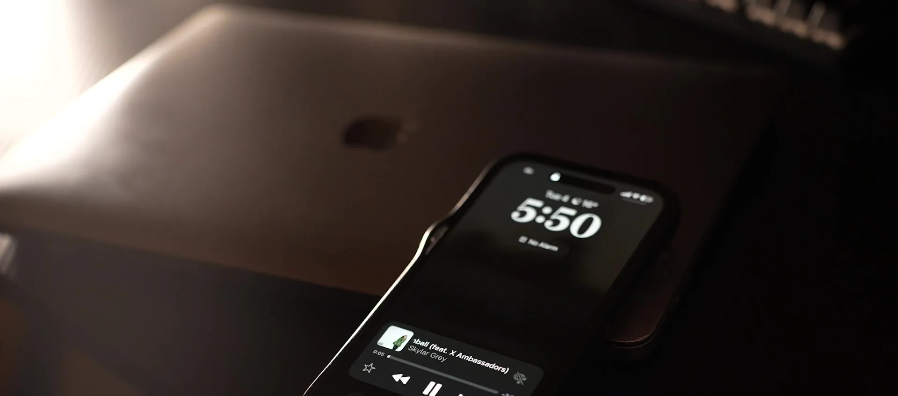
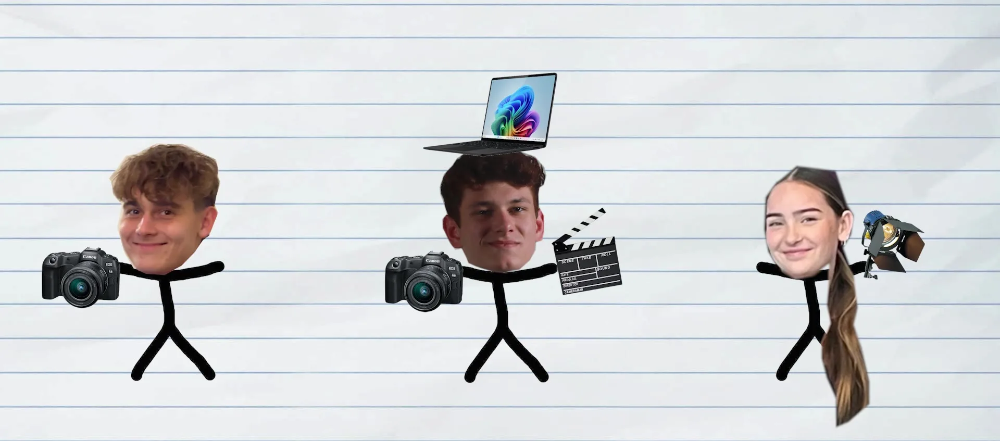
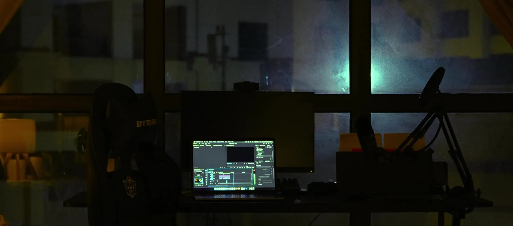

Five minutes, straight to camera: who Jack is, and the three projects that taught him how to make things.
Applicants were asked for a short video introducing themselves. Jack made a five-minute film instead: half confession, half showreel.
It opens on home videos of him as a kid, then comes back to the present to walk through how he learned to make things. A media diploma course in Dubai and his first music video. A campaign film for Head Boy, made in two weeks with nothing but a phone. A short for World Ocean Day.



Each project gets its own look. The Head Boy section leans into being shot on a phone, with a retro 4:3 frame and a scrapbook feel. The rest mixes talking to camera with stick-figure animation, behind-the-scenes clips and recreated scenes.
Jack wrote, shot and cut all of it around his own narration, captions included.



